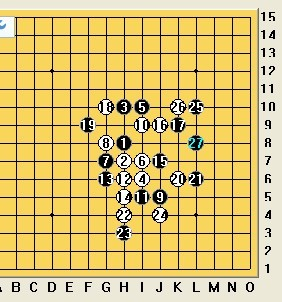

瑞星一问
首页
茗弈阁
#1 瑞星一问 作者：茗弈小刀 发表时间：2010-5-10 18:07:56
=======上图对应的爱五子棋谱代码如下，以便你拆解：========
h8h7h10i6i10i7g7g8j5i9i5h6g6h5j7j9k9
======================================================今天遇到这手棋，俺被砍，请教各位老师朋友，白该怎么下和思考好？谢谢！
#2 Re:瑞星一问 作者：小帮帮 发表时间：2010-5-11 2:39:48
小刀姐的意思是白这里应该赢吗？我怎么看着都应该是黑占据外围，黑好下的局面啊
#3 Re:瑞星一问 作者：心上人 发表时间：2010-5-11 8:47:19
白18走G10如何？？？？？？？
#4 Re:瑞星一问 作者：茗弈小刀 发表时间：2010-5-11 11:03:36
我昨天就是下的G10.后边控制不住了，应该这个14的问题吧。
#5 Re:瑞星一问 作者：屏蔽 发表时间：2010-5-11 12:34:39
这个14攻不出来的话就是黑棋外势好。
14-15可以还原，14-16直接交换到26手定型也可以。
［ 茗弈小刀 于 2010-5-11 13:11:00 时花20金币送鲜花一朵］
#6 Re:瑞星一问 作者：五子痴 发表时间：2010-5-11 12:51:58
=======上图对应的爱五子棋谱代码如下，以便你拆解：========
h8h7h10i6i10i7g7g8j5i9i5h6g6h5j7j9k9f9e10g10
======================================================这么走之后黑有什么最强应对？感觉白还是可以下吧
黑21如果走G5不是很强，白有很强反击。
黑21如果走H11好像也没什么
［ 茗弈小刀 于 2010-5-11 13:11:11 时花20金币送鲜花一朵］
#7 Re:Re:瑞星一问 作者：茗弈小刀 发表时间：2010-5-11 13:17:11
谢谢屏蔽老师和五子痴哥哥！对局原图：
